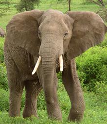
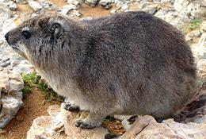
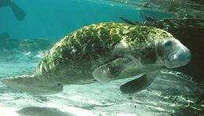
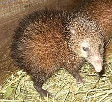
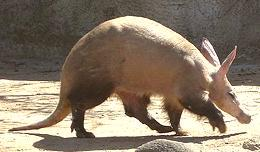

SAFARI
Users
General & History
The Afrotheria evolved from a small mammal in an almost vacant island Africa. With few competitors, they evolved rapidly to fill a wide range of niches that required a wide range of physical attributes. Eventually, Africa attached to other continents, and the larger Afrotheres spread far and wide. Meanwhile, an influx of predators from other continents forced further rapid evolution. Today, the largest Afrotheres have a contracting range, and many are threatened with extinction.
Clade Paenungulata
Members of this clade are notable for their incisor teeth, which have, even in the tiny (by comparison) Rock Hyrax, the nature of tusks. They also have many more subtle similarities.
Elephant [Loxodonta africana (African Bush Elephant) | Loxodonta cyclotis (African Forest Elephant) | Elephas maximus (Asian Elephant)]Elephants are found in patches of Africa, India and Southeast Asia. The earliest known ancestor of Elephants was about the size of a fox, and lived in what is now Morocco. The male African Bush Elephant is the largest, usually weighing in at around 13,330 pounds, but the largest on record weighed 22,000 pounds. Elephants have long been eaten by people, particularly in Africa.
Today African Elephants, are under great risk from poachers, not
for food, but for the illegal ivory trade. Most of this ivory is
shipped to Asia. So vicious is this poaching that in 2013 over 1000
park rangers were murdered while trying to protect the elephants.
Photo of Black Agouti by T-34-85 contributed to the
Public Domain.
Hyrax [Dassie (Africaans), Procavia capensis (Rock Hyrax) | Heterohyrax brucei (Bush Hyrax) | Dendrohyrax dorsalis (Western Tree Hyrax) | Dendrohyrax arboreus (Southern Tree Hyrax)] Yes, they are closely related to Elephants - they even have little tusks, but not long enough to project out. One variety or another of the Hyrax is found over most of Sub-Saharan Africa, but the Rock Hyrax also extends into the southern mountains of Algeria, along both sides of the Red Sea, and north into Israel. Adult Hyraxes range from about 5 pounds to 8 pounds, with the Rock and Bush Hyraxes heavier than the Tree Hyraxes. Hyraxes have a host of predators, everything from eagles to snakes,
and are also hunted by humans for food, though not intensively. The
Rock Hyrax (Dassie) was much eaten by early Dutch settlers in South
Africa due to the serious shortage of meat animals available to them.
Their guns were too clumsy and ineffective to go after big game. The
Rock Hyrax is safe from humans in parts of its northern range because
it isn't kosher or halal.
Photo of Rock Hyrax by User25384 distributed under
license Creative Commons
Attribution-ShareAlike v2.0 Germany.
Sirenia [Sea Cows; family Trichechidae (Manatees) | family Dugongidae (Dugong)] These almost entirely vegetarian, fully aquatic animals eat large amounts of water plants, thus are restricted to warm, shallow regions with plenty of vegetation. Manatees are found in estuaries and rivers on both sides of the Atlantic. They inhabit the entire Caribbean region and the Amazon basin deep into the center of South America. In Africa they live along the west central coast and far up the rivers almost to central Africa. A full grown Manatee can weigh more than 3,900 pounds. Dugongs live in waters along the east coast of Africa, including the Red Sea, and through the islands of Southeast Asia. The largest Dugong recorded weighed 2,200 pounds. At the time of the Spanish arrival, the natives of the Caribbean
region were hunting Manatees for food, and they were similarly hunted
in Africa. Today, these animals are legally protected through much of
their ranges, but poaching for food is still a problem. The main risks
to these animals are from other human activity: ships, boats, fishing
nets, oil spills etc. With manatees, damage from ships is very common
because they don't hear low frequency sounds well.
Photo of Manatee from U.S Fish and Wildlife Service =
Public Domain.
|
Afroinsectiphilia
While it's hard to imagine that creatures weighing just a couple of ounces could be fairly closely related to Elephants, the DNA evidence is pretty clear. One family (Macroscelididae), not shown here because they are all too small to eat, was given the name "Elephant Shrews". They were tiny and shrew-like, but with long, mobile noses suggestive of elephant trunks. The namers never dreamed they would actually be related to elephants.
Common Tenrec [Tailless Tenrec; Tenrec ecaudatus] Tenrecs are small insect eating animals native to Madagascar and parts of Africa. This Tenrec, found throughout Madagascar, is much larger than most, growing to 15 inches long and weighing up to 5-1/2 pounds. It is covered with fur, but also long sharp spines. It not only eats insects, but also small frogs and mice. It lives in burrows and can hibernate for long periods. Despite the "tailless" designation, it does have a tail, but a very short one. This Tenrec has been taken from Madagascar to other islands in the
Indian Ocean, and it is eaten on the island of Mauritius. This is not
easy, as it is hard to catch and difficult to prepare properly,
especially with all those sharp spines. The Common Tenrec is IUCN red
listed LC (Least Concern).
Photo by Elias Neideck distributed under license
Creative Commons
Attribution-ShareAlike v3.0 Unported.
Aardvark [Cape Anteater, African Ant Bear; Orycteropus afer of order Tubulidentata]
The Aardvark is a nocturnal burrowing insect eater that roams over
the southern 2/3 of Africa. It avoids rocky areas because it can't
burrow there. It is rather large for a burrowing animal, weighing
up to 180 pounds. It has a very long snout containing an even longer
tongue, coated with stick saliva and used to gather ants and termites.
The only other thing the Aardvark eats is the Aardvark cucumber,
the only cucumber that matures its fruit underground. The meat, which
is similar to pork, is eaten by some African cultures.
The Aardvark is IUCN red listed LC (Least Concern).
Photo by MontageMan (cropped) distributed under license
Creative Commons
Attribution-ShareAlike v2.0 Generic.
|